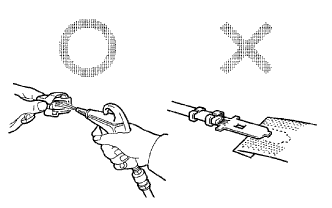

電子部品の抵抗値測定条件
特に明記のない場合を除き、抵抗はすべて周囲温度20°Cで測定する。車が走行したすぐ後の高い周囲温度で測定した場合は、抵抗値は規定値外になるので、エンジンが冷えてから測定を行う。
コネクターの取扱い
ロック付きコネクターを切り離す場合は、コネクターをかん合側に押し、ロックのツメを動きやすくしてからロックをはずす。
コネクターを切り離す場合は、ハーネスを持たずにコネクターを持って行う。
コネクターの接続前に、端子の変形、損傷および抜けなどがないことを確認する。
ロック付きコネクターの接続は、ロック音がするまで確実に差し込む。
コネクターをトヨタエレクトリカルテスターで点検する場合は、ミニテストリードを使用してコネクターの後ろ側(ハーネス側)から行う。
- ■ 注 意 ■
- 防水コネクターはコネクターの後ろ側から点検できないため、サブハーネスを接続して点検する。
- 差し込んだテスター棒をむやみに動かして、端子を損傷させない。
コネクターの点検要領
コネクター接続状態で、コネクターハウジングを持って差し込み具合およびロックの効き具合を点検する。(かん合状態)
コネクター切り離し状態で、ワイヤハーネスを軽く引っ張り点検する。(端子抜け、端子かしめ状態、芯線切れ)発錆、金属片、水などの有無、端子の曲りの有無を目視点検する。(腐食、異物混入、端子変形)
- ■ 注 意 ■
- 金メッキのメス端子をテストする場合は、常に金メッキのオス端子を使用する。
オス端子と同じ端子を用意してメス端子に差し込み、端子接触圧、かん合具合および摺動重さを点検する。
|  |
コネクター端子の修理方法
接点部に汚れがある場合はエアガン、ウエスなどを用いて接点部を清掃する。サンドペーパーなどを使用して、接点部を磨くと表面のメッキがはがれてしまうため、サンドペーパーなどで接点部を絶対に磨かない。
接触圧力が異常な場合はメス端子を交換する。このとき、部品側の対応するオス端子が金メッキ(金色)の場合は金メッキ、錫メッキ(銀色)の場合は錫メッキのメス端子を用いる。
接点部に異常がない場合は、接点部をエアガンなどで清掃し、コネクタグリース(品番 08887-02106)を塗布しておく。(これにより接点の酸化、摩耗を防止できる。)
トヨタ純正 コネクタグリース
オルタネーターおよびヘッドランプなど水の掛かりやすい場所のコネクターには、端子の腐食を防止するグリース(白)が充てんされている。
コネクタグリースが不足していたり、端子を修理した場合は、メス端子にコネクタグリース(品番 08887-02106,100g)を充てんする。
- ■ 注 意 ■
- ほこりなどを付着させない。
- ドライバーなど工具を使用して充てんしない。
防水コネクターのOリングおよびゴム栓にグリースが付着しても問題ないが、他のゴム部品(ウェザーストリップおよびワイヤハーネス用グロメットなど)に付着すると劣化および変色などのおそれがある。万一付着した場合は速やかにふき取る。
 |
ワイヤハーネスの取り扱い
ハーネスを取りはずす場合は、作業前に取り回しおよびクランプ状況を確認し、復元が確実に行えるようにする。
ハーネスをねじったり、引っ張ったり、必要以上にたるませない。
ハーネスを高温となる箇所、回転部、摺動部、振動部および鋭角部(パネル端部、スクリュ先端など)と干渉させない。
部品を取り付ける場合は、ハーネスを噛み込ませない。
ハーネスの被覆を破らない。破れた場合は、交換するかビニールテープなどで確実に修正する。